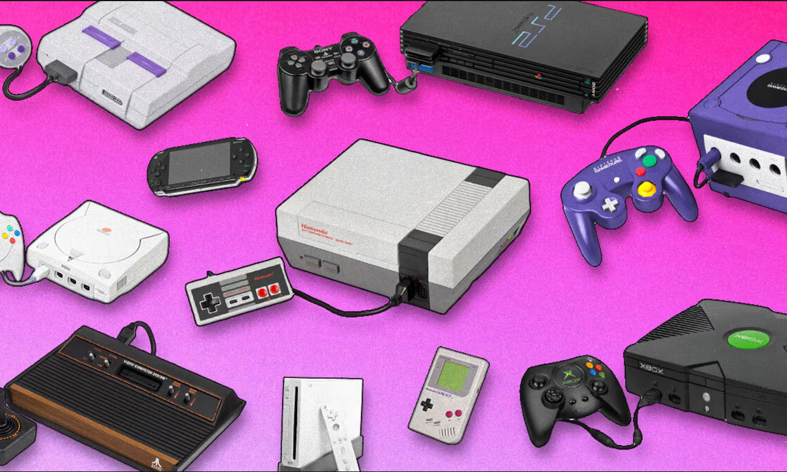

Del curso 4 de la divicción 7 les quiere dar la invitacion de conocer nuestro arcade, esta maquina tiene varias consolas y esto de debe gracias a BATOCERA que es un emulador de linux que puede ser instalado desde un prendai sin necesidad de alguna programación.  Batocera acomparación de otros emuladores es mas fluido con juegos pesados como de play1, play2 y play3